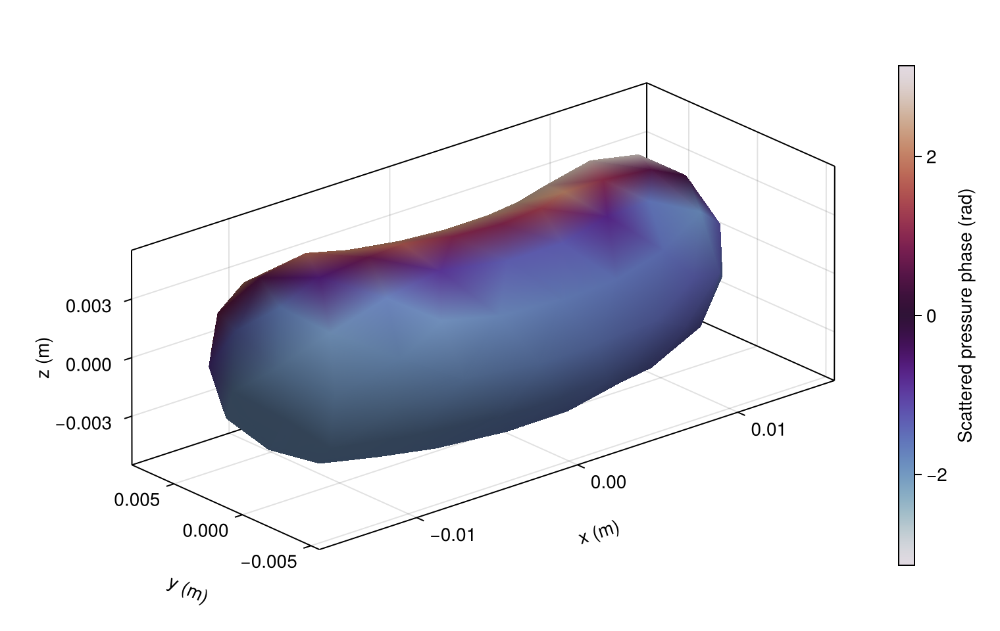
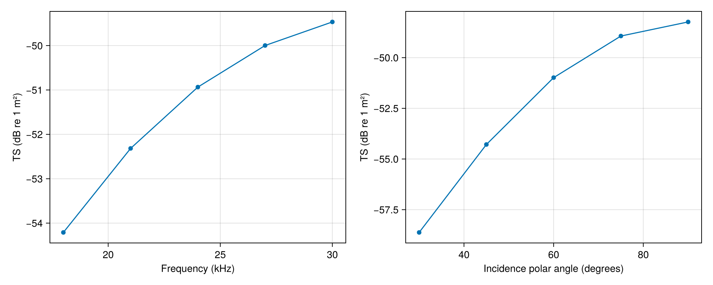
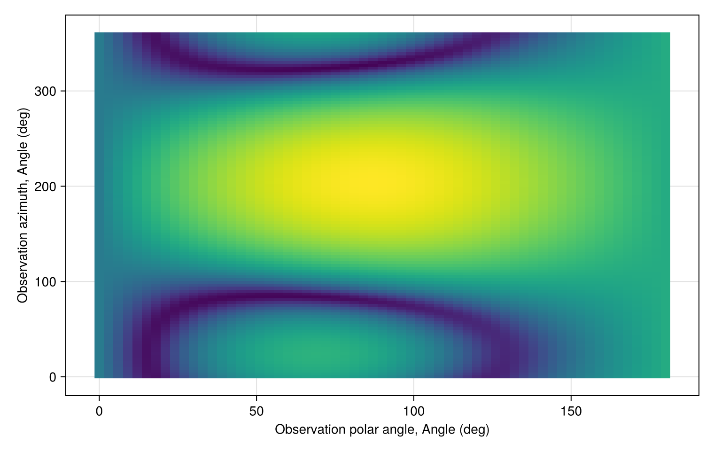

Closed bent-cylinder scattering
Consider a rigid cylinder with 5 mm radius, 20 mm cylindrical arc length, 20 mm curvature radius and 5 mm hemispherical ends. Its bend lies in the xy plane, with midpoint tangent along +x. Incidence has polar angle 60° and azimuth 0.4 radians. The full surface includes both ends, so observations need not be near broadside.
Solve and inspect the actual surface
using AcousticScattering
using CairoMakie: Figure, Axis, Colorbar, lines!, scatter!, plot, save
const AS = AcousticScattering
body = Cylinder(0.005, 0.02; radius_curvature = 0.02, endcap_depth = 0.005)
surface = mesh(body; method = :full, resolution = 0.0032, mesh_order = 3, qorder = 4)
options = (compression = (method = :none,),
gmres_kwargs = (reltol = 1e-9, restart = 150, maxiter = 1200))
beta, alpha = pi / 3, 0.4
solution = bem(surface, Rigid(), 100.0; incidence_angle = beta, incidence_azimuth = alpha,
options...)
@assert diagnostics(solution).converged
field_figure = plot(solution; kind = :surface_field, field = :pressure_phase,
colorrange = (-pi, pi), colormap = :twilight,
figure = (size = (760, 480), figure_padding = (70,20,20,20)),
axis = (xlabel = "x (m)", ylabel = "y (m)", zlabel = "z (m)"))
Colorbar(field_figure.figure[1, 2]; limits = (-pi, pi), colormap = :twilight,
label = "Scattered pressure phase (rad)")
save("bent_surface.png", field_figure)
Pressure is normalized to a unit incident plane wave. The mesh and field plot use the same curved triangles as the solve. For nonuniform bending, supply a closed triangular surface through mesh(nodes, triangles) or mesh(path).
Check convergence
Refine triangle size and quadrature separately. Compare backscatter, forward scatter and a side observation in both target strength and complex amplitude:
d = [cos(beta), sin(beta) * cos(alpha), sin(beta) * sin(alpha)]
directions = (-d, d, [0.0, 0.0, 1.0])
base = [scattering_amplitude(solution; direction) for direction in directions]
changes = map(((0.0027, 4), (0.0032, 5))) do (h, q)
refined = bem(body, Rigid(), 100.0; method = :full, meshsize = h,
mesh_order = 3, qorder = q, incidence_angle = beta, incidence_azimuth = alpha, options...)
@assert diagnostics(refined).converged
amplitudes = [scattering_amplitude(refined; direction) for direction in directions]
db = maximum(abs.(target_strength.(amplitudes) .- target_strength.(base)))
relative = maximum(abs.(amplitudes .- base) ./ abs.(amplitudes))
@assert db < 0.1 && relative < 0.01
(; edge_length_m = h, quadrature_order = q, max_change_db = db,
max_relative_amplitude_change = relative)
end
changes((edge_length_m = 0.0027, quadrature_order = 4, max_change_db = 0.004365004691678109, max_relative_amplitude_change = 0.0005044338989135412), (edge_length_m = 0.0032, quadrature_order = 5, max_change_db = 0.006287269926147587, max_relative_amplitude_change = 0.000796591751565066))These checks concern this frequency and these directions. Refine across the requested spectrum and angular range before drawing conclusions near resonances or scattering nulls. Rigid/soft closed-surface MFS provides a separate numerical method: pass the full mesh to mfs, choose a coarser source_mesh, and vary its source count and inward offset. BCMS's coherent-length correction and lateral-only bent MFS omit end scattering and are not exact closed-cylinder benchmarks away from broadside. See Jech et al. (2015) for finite-cylinder model limitations.
Frequency, incidence and bistatic patterns
Frequency sweeps reuse the geometry. At fixed frequency, mesh-based incidence sweeps also reuse the assembled boundary operators and their compression. Each incidence gets a fresh GMRES solve. A bistatic map reuses an existing solution and changes only the observation direction.
sound_speed = 1500.0
frequencies = collect(range(18000.0, 30000.0; length = 5))
spectrum = AS.frequency_sweep(k -> bem(surface, Rigid(), k;
incidence_angle = beta, incidence_azimuth = alpha, options...), frequencies, sound_speed)
angles = deg2rad.([30.0, 45.0, 60.0, 75.0, 90.0])
aspect = AS.incidence_angle_sweep(surface, Rigid(), 100.0, angles;
incidence_azimuth = alpha, options...)
figure = Figure(; size = (1000, 400))
frequency_axis = Axis(figure[1, 1]; xlabel = "Frequency (kHz)", ylabel = "TS (dB re 1 m²)")
lines!(frequency_axis, spectrum.frequencies ./ 1000, spectrum.target_strength)
scatter!(frequency_axis, spectrum.frequencies ./ 1000, spectrum.target_strength)
angle_axis = Axis(figure[1, 2]; xlabel = "Incidence polar angle (degrees)", ylabel = "TS (dB re 1 m²)")
lines!(angle_axis, rad2deg.(aspect.angles), aspect.target_strength)
scatter!(angle_axis, rad2deg.(aspect.angles), aspect.target_strength)
save("bent_sweeps.png", figure)
save("bent_bistatic.png", plot(solution; kind = :bistatic_map,
thetas = range(0, pi; length = 61), phis = range(0, 2pi; length = 121),
figure = (size = (760, 480),)))

Replace Rigid() with PressureRelease(), FluidFilled(g, h) or GasFilled(g, h) to solve those boundary conditions on the same surface. Density and sound-speed ratios are interior/exterior values. Gas resonances require their own frequency and mesh refinement.